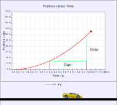

When the velocity of an object remains constant, its average velocity is equal to the instantaneous velocity, and both remain constant over time (position is given in centimeters and time is given in seconds). This is precisely why we can use the following definition of average velocity:
vavg = Δx/Δt
to describe the motion of an object moving at a constant velocity. We rewrite this equation as x = x0 + v (t - t0). But what happens when an object is not moving at a constant velocity? While we won't get into a full discussion of why things move until Physlet Physics Chapters 4 and 5 (Newton's laws), we can still use the concept of average velocity to describe the motion of an object. The animation shows a toy Lamborghini traveling at a nonconstant velocity.